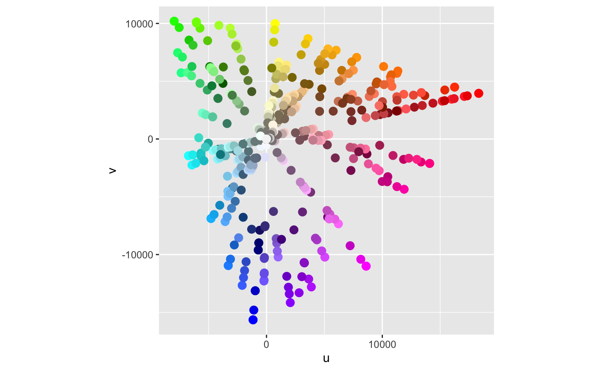
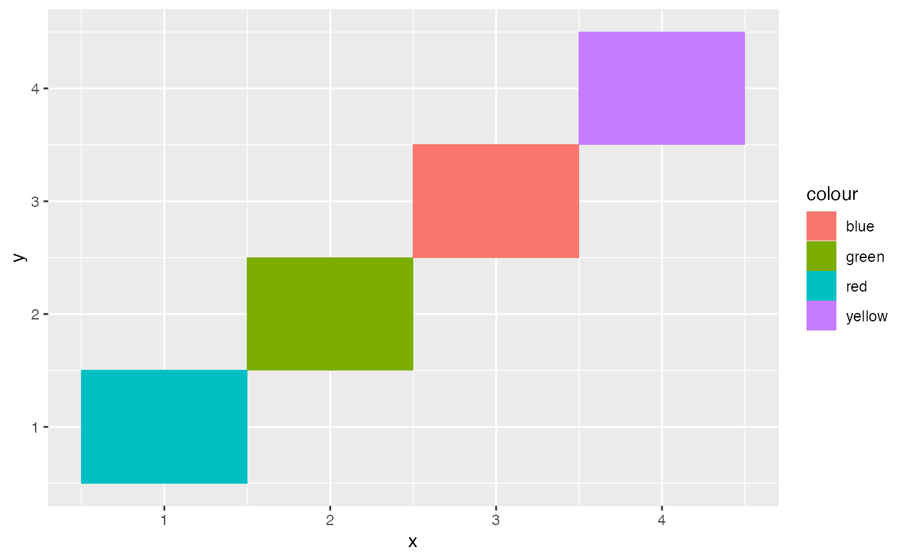
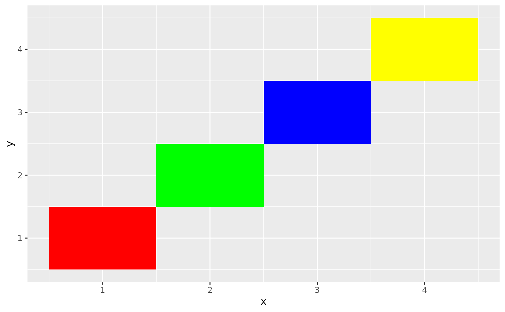
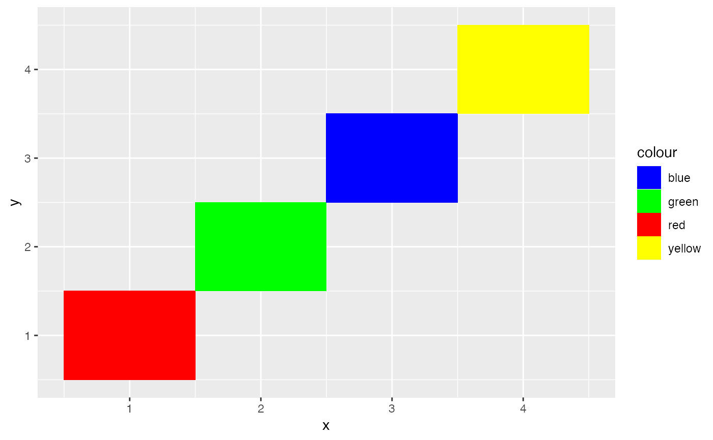
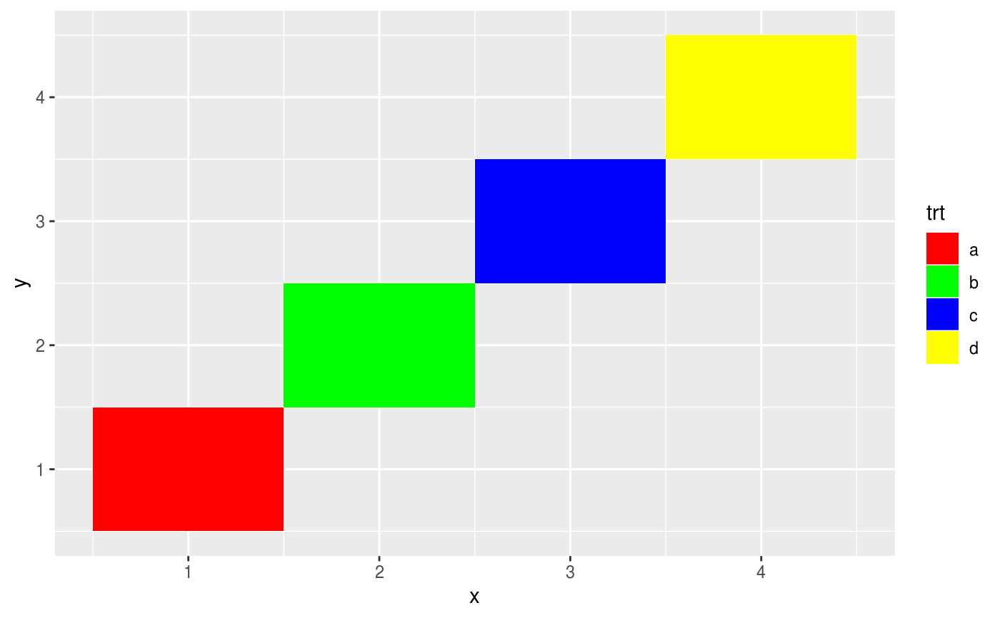
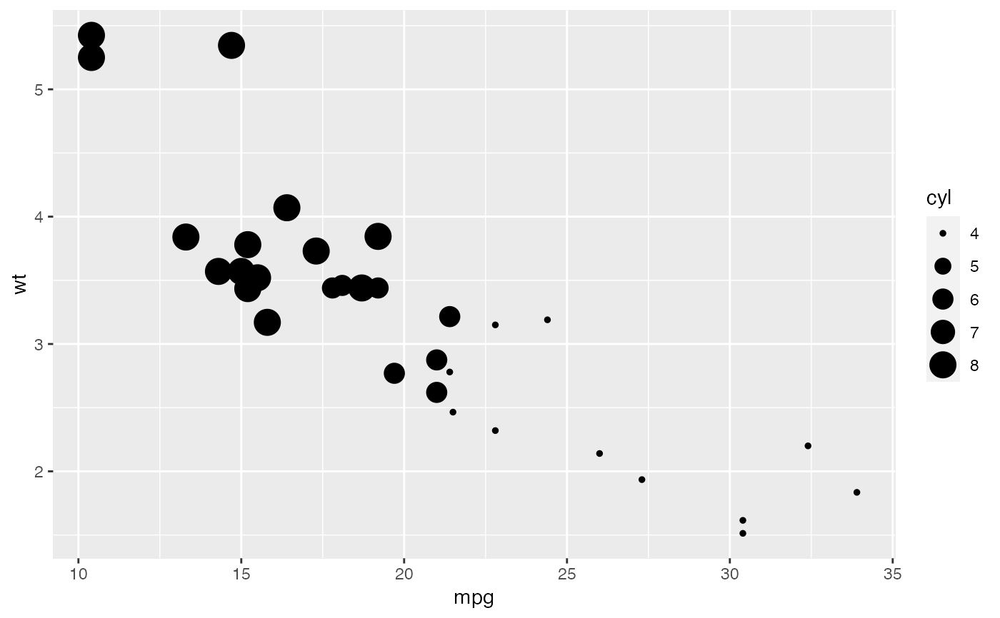
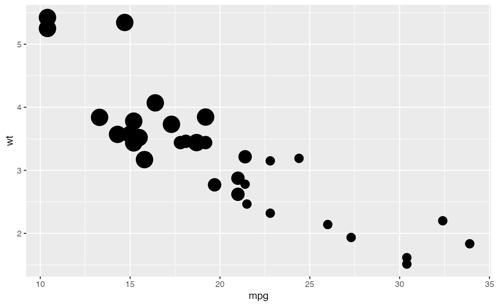

Use this set of scales when your data has already been scaled, i.e. it
already represents aesthetic values that ggplot2 can handle directly.
These scales will not produce a legend unless you also supply the breaks,
labels, and type of guide you want.
scale_colour_identity(..., guide = "none", aesthetics = "colour") scale_fill_identity(..., guide = "none", aesthetics = "fill") scale_shape_identity(..., guide = "none") scale_linetype_identity(..., guide = "none") scale_alpha_identity(..., guide = "none") scale_size_identity(..., guide = "none") scale_discrete_identity(aesthetics, ..., guide = "none") scale_continuous_identity(aesthetics, ..., guide = "none")
| ... | Other arguments passed on to |
|---|---|
| guide | Guide to use for this scale. Defaults to |
| aesthetics | Character string or vector of character strings listing the
name(s) of the aesthetic(s) that this scale works with. This can be useful, for
example, to apply colour settings to the |
The functions scale_colour_identity(), scale_fill_identity(), scale_size_identity(),
etc. work on the aesthetics specified in the scale name: colour, fill, size,
etc. However, the functions scale_colour_identity() and scale_fill_identity() also
have an optional aesthetics argument that can be used to define both colour and
fill aesthetic mappings via a single function call. The functions
scale_discrete_identity() and scale_continuous_identity() are generic scales that
can work with any aesthetic or set of aesthetics provided via the aesthetics
argument.
ggplot(luv_colours, aes(u, v)) + geom_point(aes(colour = col), size = 3) + scale_color_identity() + coord_equal()df <- data.frame( x = 1:4, y = 1:4, colour = c("red", "green", "blue", "yellow") ) ggplot(df, aes(x, y)) + geom_tile(aes(fill = colour))# To get a legend guide, specify guide = "legend" ggplot(df, aes(x, y)) + geom_tile(aes(fill = colour)) + scale_fill_identity(guide = "legend")# But you'll typically also need to supply breaks and labels: ggplot(df, aes(x, y)) + geom_tile(aes(fill = colour)) + scale_fill_identity("trt", labels = letters[1:4], breaks = df$colour, guide = "legend")# cyl used as point size ggplot(mtcars, aes(mpg, wt)) + geom_point(aes(size = cyl)) + scale_size_identity()